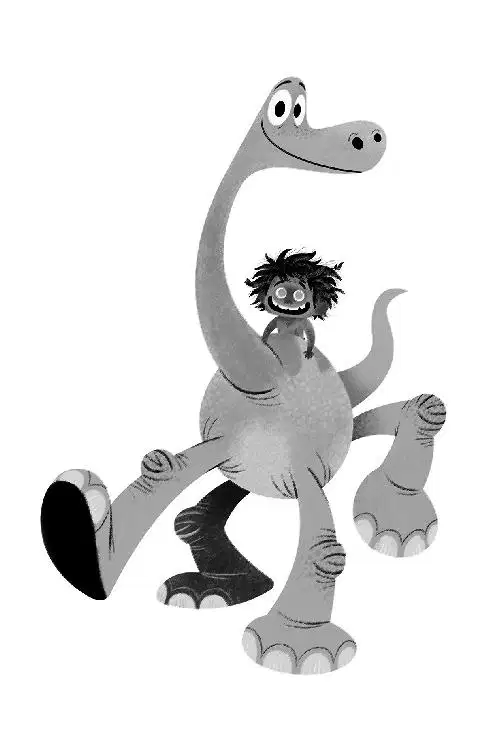

Eventually, dazed and achy, Arlo opened his eyes and looked around. His legs were still in the water, and his body was beached on a small sandbar. He was miles down the river and very far from home.
Some big logs were jammed together next to him, making sharp peaks that looked like angry teeth. His body throbbed with pain, each scrape and scratch burning as he breathed. He felt the bump on his head and shuddered.
As Arlo took in his surroundings, fear began to ripple through his body. “Momma!” Arlo cried. “Momma!” His voice echoed, ringing against the towering cliff walls that surrounded him. When he quieted the only other sound he could hear was the wind moving through the pine trees and the gurgles of the river washing over the rocks. He was completely alone.
Arlo tried to gather the strength to climb out and slowly rose to his feet. But the ground crumbled beneath his feet. He slipped and his jaw smacked against a boulder, jutting out. Arlo lay still, trying to catch his breath. He needed to figure out what to do next.
Arooowwwwh. A loud howl sounded, down into the canyon. He looked up toward the top of the cliff wall and saw... the boy from the trap! A burning anger boiled up inside of him. “You!” he yelled. “This is all your fault!”
Furious and fueled by his anger, Arlo propelled his body up the cliff to try and get to the boy. “I should have finished you off the first time.”
The boy just sat on the edge of the cliff. Cocking his head this way and that, he watched curiously as Arlo clumsily made his way up the mountain. He was working hard and struggling for breath, but still managed to seek out a few choice words: “This is all your fault!” Arlo said.
The boy remained calm, sitting and watching. This made Arlo even angrier. He snapped. “Get over here!” he shouted.
Then the boy did something entirely unpredictable: he tried to climb on Arlo’s face!
“Get away!” Arlo screamed. He repeated it over and over, harshly jerking his neck, and tossing the boy off. The boy turned and used his hind legs to kick dirt at Arlo’s face. The dinosaur spit and coughed, trying to get the dust and dirt out of his mouth.
When Arlo finally managed to hoist himself up onto the cliff’s edge, the boy had disappeared. “You better run!” Arlo called after him, threateningly.
Arlo took a deep breath and slumped. He looked around at his surroundings again. The wilderness around him seemed to be the whole world. He couldn’t see an end to it. He spotted a high ridge off in the distance and thought if he could get up to the ridge, maybe he could see where home was. With no choice, no one to ask, and no other ideas, he started off, toward the ridge.
